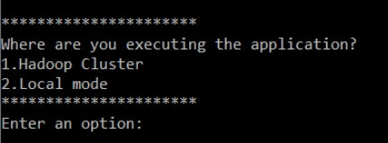
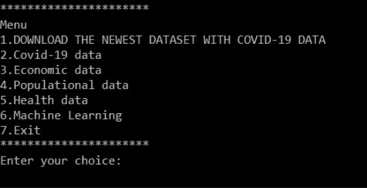
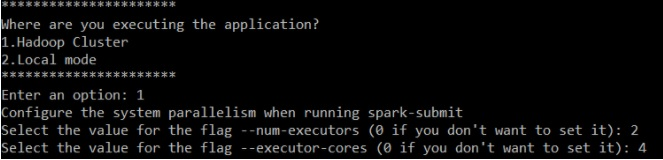

¿Cómo Funciona?
CovidAnalysis es un proyecto destinado al estudio y el análisis de distintos ámbitos económios y sanitarios donde la pandemia ha dejado huella.
Para ello, hemos llevado a cabo tres fases:
1. Procesamiento Big Data y Procesamiento paralelo
El volumen de datos con el que vamos a trabajar, disponemos de un conjunto de datos de tamaño considerable que además va a seguir creciendo puesto que los datos relativos a la pandemia se actualizan cada día.
Utilizando procesamiento paralelo obtendremos una mejora en cuanto a la eficiencia respecto del procesamiento habitual. Para justificar esta mejora, una parte clave de nuestro proyecto será el análisis de la mejora del rendimiento al aplicar procesamiento paralelo.
2. Aplicacion en técnicas Machine Learning
Aplicación de técnicas de Machine Learning para encontrar relaciones entre las distintas fuentes de datos y análisis de los resultados. Debido a que los datos con los que trabajamos son muy variados ya que los extraemos de fuentes muy distintas, aplicamos técnicas de Machine Learning mediante la libreria MLlib, para encontrar relaciones entre las distintas fuentes de datos y análisis de los resultados.
3. Análisis y visualización
Debido a que los datos con los que trabajamos son muy variados ya que los extraemos de fuentes muy distintas, mediante un análisis exhaustivo buscamos una correlación entre ellos y así poder mostrar un resultado.
Debido a la complejidad que puede resultar entender los datos vistos solamente de forma numérica, decidimos representar los resultados obtenidos de forma visual mediante distintas gráficas.
¿Cómo se Ejecuta?
Modo LOCAL
Requisitos
Tener Spark, Java, Python y Scala instalado en nuestra máquina. Si se quiere usar la parte de machine learning es necesario instalar spark-3.0.1
Tener descargada la biblioteca matplotlib de Python estándar Esta biblioteca se puede descargar con el comando $pip install matplotlib
Exportar la variable PYSPARK_PYTHON con la ruta de la instalación local de python. Esto se puede hacer, por ejemplo, con $export PYSPARK_PYTHON=”/usr/bin/python” Para no tener que hacer esto cada vez que usemos la aplicación, podemos guardar su valor en el archivo de configuración ~/.profile, añadiendo la línea anterior al final del mismo y ejecutando $source ~/.profile para añadir los cambios.
Ejecutar la Aplicación
La aplicación se ejecuta como un script estándar de python. El script que ejecutaremos será main.py, que se encuentra en la ruta Application/scripts/main.py
Este script nos mostrará un menú en el que seleccionaremos qué funcionalidad queremos ejecutar y se nos pedirán todos los parámetros y datos necesarios para ejecutar la misma.
El propio ejecutable de python creará un fichero execute.py, con el código en python para ejecutar la tarea requerida en spark, en la misma ruta en la que estaba main.py, y también el propio ejecutable ejecutará el comando spark-submit execute.py, por lo que no hay que preocuparse de nada que no sea ejecutar main.py y elegir las opciones deseadas.
Nada más ejecutar la aplicación se nos mostrará un primer menú en el que debemos elegir dónde estamos ejecutando la aplicación, en este caso, introducimos un 2.
 Seguidamente nos pedirá que introduzcamos el paralelismo a nivel de sistema que queremos darle a nuestra aplicación. Podemos elegir entre introducir el número de threads que queremos crear ( .master(‘local[n]’) para un n introducido por pantalla o usar tantos threads como núcleos lógicos tenga nuestra máquina (.master(‘local[*]’))
Una vez elegido este parámetro aparece el menú principal, en el que se reflejan todas las funcionalidades de nuestra aplicación. La aplicación usa un dataset con información sobre covid-19 en el mundo que se actualiza cada día. La aplicación viene con un dataset con datos hasta una determinada fecha, pero si en el momento de la ejecución se quiere contar con los últimos datos actualizados, es necesario ejecutar la opción 1, que nos descargará desde https://covid.ourworldindata.org/data el dataset owid-covid-data.csv con los datos más recientes disponibles y será el que use en la ejecución de la aplicación.
Las opciones 2-6 permiten acceder a las distintas funcionalidades con las que contamos en nuestra aplicación.
CLUSTER DE HADOOP EN AWS
Requisitos
En primer lugar, debemos lanzar un cluster con Spark como aplicación. Si queremos ejecutar las funcionalidades de Machine Learning es necesario que el cluster tenga instalado Spark-3.0.1. Para ello seleccionamos: Release: emr-6.2.0 Applications: Spark Ejemplo de configuración de Cluster en el que funcionan todas la utilidades de nuestra aplicación. Una vez hayamos conectado con el cluster es necesario:
- Instalar la biblioteca matplotlib de Python. Para hacerlo, ejecutamos
$ sudo pip3 install matplotlib- Exportar la variable PYSPARK_PYTHON. Para ello, ejecutamos:
$export PYSPARK_PYTHON=”/usr/bin/python3”- Enviar la aplicación al cluster. Se puede utilizar scp o clonar el repositorio Github. Para ello es necesario instalar el comando git. Ejecutamos:
$ sudo yum install gitDesde la carpeta en la queramos crear el proyecto ejecutamos:
$ git clone https://github.com/Cloud2020Group4/CovidAnalysis.git

Ejecutar la Aplicacion
Al igual que en modo local, para ejecutar la aplicación sólo tenemos que ejecutar el script de python main.py (Application/scripts/main.py) y este nos generará un ejecutable con el código para ejecutar en spark lo necesario para llevar a cabo la funcionalidad especificada en el menú.
En el primer menú que se nos muestra cuando ejecutamos la aplicación, seleccionamos la opción 1 (Hadoop Cluster). A continuación se nos pedirán los parámetros de paralelismo a nivel de sistema que queremos para nuestra aplicación, introduciendo los valores de --num-executors (número de nodos ejecutores, es de decir, de instancias de nuestro cluster que queremos poner a trabajar) y --executor-cores (él número de hilos que ejecutará cada nodo, y que no debe ser mayor al número de procesadores lógicos de las instancias del clúster. Por ejemplo, en la configuración anterior, al usar instancias m4.large no podemos dar un valor superior a 4 al número de cores por ejecutor.
 Como el spark trabaja sobre el Hadoop File System, los archivos que va a leer tienen que estar cargados en el mismo, lo cual podemos hacer manuelamente antes de ejecutar la aplicación. Sin embargo, si no queremos preocuparnos por esto, la aplicación nos da la opción de hacerlo automáticamente, y así no tenemos que preocuparnos por qué archivos subimos.
Igualmente, las funcionalidades que generan resultados lo hacen depositando los resultados en el HDFS. Si no queremos traernos manualmente al sistema local de ficheros del front-end del cluster el fichero de salida para visualizarlo la aplicación nos ofrecerá la posibilidad de hacerlo automáticamente también.
Las gráficas, al ser generadas con una biblioteca estándar de python como es matplotlib y no con spark se guardan directamente en el front-end.